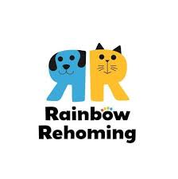
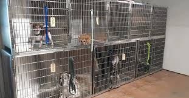
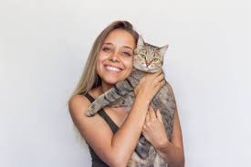

We have an amazing volunteer opportunity here! This job is helping with our rehoming centres for dogs and cats.

Volunteer Alvarez Trequie helps with rehoming and finding fosters for our beloved pets. He's volunteered here for 4 years and he loves this volunteer role, as he says "it brings me joy and valuable life skills to help this vulnerable pets. I've even adopted one myself!"
Another volunteer opportunity is to help in our veterinary clinic, making sure the pets are super comfortable before and after their surgery. You might even get to hold one!

This job is one of the most important parts of a pet's journey through us, because we love seeing the animals nice and relaxed, ready for their forever homes.

A picture of a former volunteer holding and nurting a cat after it came here. We reached out to the volunteer and she said "I really enjoyed being at Safer Dogs and Cats. Shame I had to move away. One of my favourite parts of volunteering there was cuddling the cute dogs and cats and helping them find their homes, which they deserved for being such amazing animals."